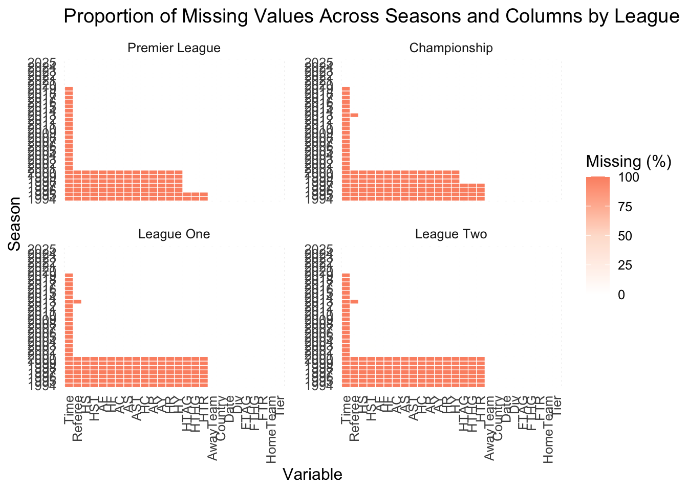

This project uses publicly available match-level data provided by Football-Data.co.uk, a long-standing repository of standardized football results and match statistics. The platform compiles official match information from multiple reputable sources—including XScores, BBC Sport, Flashscore, and ESPN—and distributes them in a consistent, computer-ready CSV format suitable for statistical analysis.
2.1 Description
For the purposes of this study, only data from English football competitions were used. These include the Premier League, Championship, League One, League Two, and, when available, the National League. The dataset covers more than two decades of competitive play, with full-time and half-time results available back to the 1993/94 season and detailed match statistics widely available from the 2000/01 season onward.
The variables utilized in this project relate exclusively to match outcomes and in-game performance metrics. These include goals scored, half-time results, shots, shots on target, corners, fouls, offsides, disciplinary actions, and referee information. Historical bookmaker odds—also included in the original files—were intentionally excluded, as the analysis focuses on sporting performance rather than betting markets.
Football-Data.co.uk aggregates information from multiple official and media-based match reporting services to ensure accuracy and completeness. Data are updated on a rolling basis throughout each season and are archived annually, enabling consistent longitudinal analysis across leagues and time periods.
This dataset provides a comprehensive, standardized foundation for evaluating long-term trends in English football, comparing performance across divisions, and studying changes in the nature of the game over time.
2.2 Data Collection
We automated the collection and cleaning of match-level data from the Football-Data.co.uk archive. Using tools from the purrr package, it downloads each available season across the four major English divisions, standardizes column naming conventions across years, removes unused or unavailable variables, and consolidates all leagues into a single harmonized dataset. This approach ensures reproducibility, minimizes manual intervention, and guarantees consistency across more than two decades of historical football data.
We can identify three distinct tiers of data completeness across the four tiers of English football. The pre-2000 era is limited to basic match outcomes and full-time goals. From 2000 onwards, the dataset expands to include granular match statistics, such as shots, corners, fouls, and disciplinary records. Finally, post-2020, data fidelity improves further to include match start times.
Code
library(dplyr)library(tidyr)library(ggplot2)library(tidyr)library(ggalluvial)library(lubridate)library(GGally)library(scales) # para rescale()library(vcd)missing_summary <- Data_England %>%group_by(League, Season) %>%summarise(across(everything(), ~100*mean(is.na(.))), .groups ="drop") %>%# proportion missingpivot_longer(cols =-c(League, Season),names_to ="variable",values_to ="prop_missing" ) %>%group_by(variable) %>%mutate(total_missing =mean(prop_missing, na.rm =TRUE)) %>%ungroup() %>%mutate(variable =fct_reorder(variable, total_missing, .desc =TRUE))missing_summary=missing_summary |>mutate(Season=substr(Season, 6,10))ggplot(missing_summary, aes(x = variable, y = Season, fill = prop_missing)) +geom_tile(color ="white") +facet_wrap(~ League, scales ="free_y") +scale_fill_gradient(low ="white",high ="#191970",name ="Missing (%)" ) +labs(title ="Proportion of Missing Values Across Seasons and Columns by League",x ="Variable",y ="Season" ) +theme_minimal(base_size =12) +theme(axis.text.x =element_text(angle =90, hjust =1, vjust =0.5),panel.spacing =unit(1, "lines") )

2.4 Outliers
The heatmap compares how often different outlier-detection methods flag extreme values in each match variable. Across most variables, all three methods identify very few outliers, indicating generally well‑behaved distributions. In contrast, red‑card variables (HR, AR) and, to a lesser extent, full‑time home goals (FTHG) show much higher outlier percentages, especially under the IQR method, revealing heavy tails or rare extreme events, which is reasonable since its not common to have a game with a lot of goals or red cards.
For example, the outliers in home‑team goals per match (FTHG) and in red cards for both home (HR) and away teams (AR) are concentrated near the upper quantiles of their respective distributions.